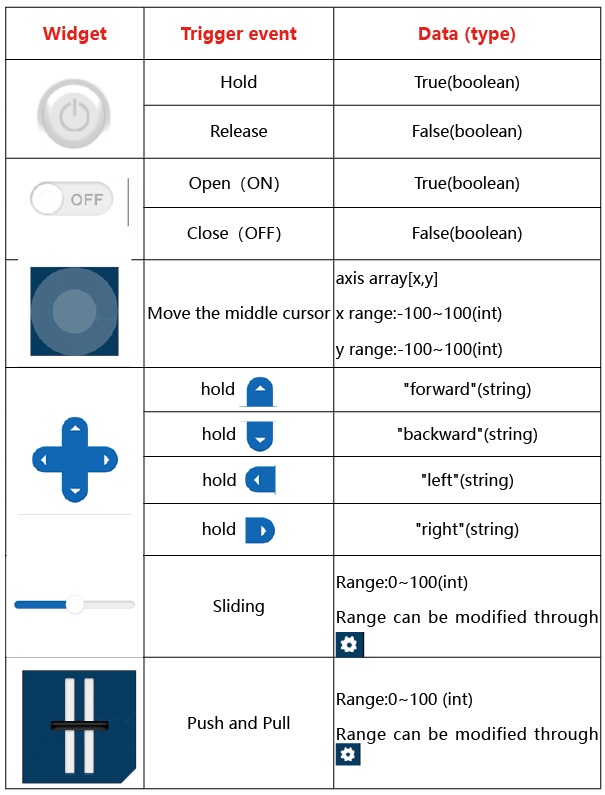

SunFounder pico_4wd_car
Introduction to Raspberry Pi Pico
Introduction to Pico RDP
Get Started with MicroPython
Test the Modules
Assemble the Car
Micropython Projects
APP Control
First-time Use the APP
Transfer Data
APP Control Example
Widget List
Schematic and Structure Drawing
(Optional) MicroPython Basic Syntax
FAQ
Thank You
SunFounder pico_4wd_car
»
APP Control
»
Widget List
View page source
Widget List
¶
The control widgets are shown in the table:

The data widgets are shown in the table: